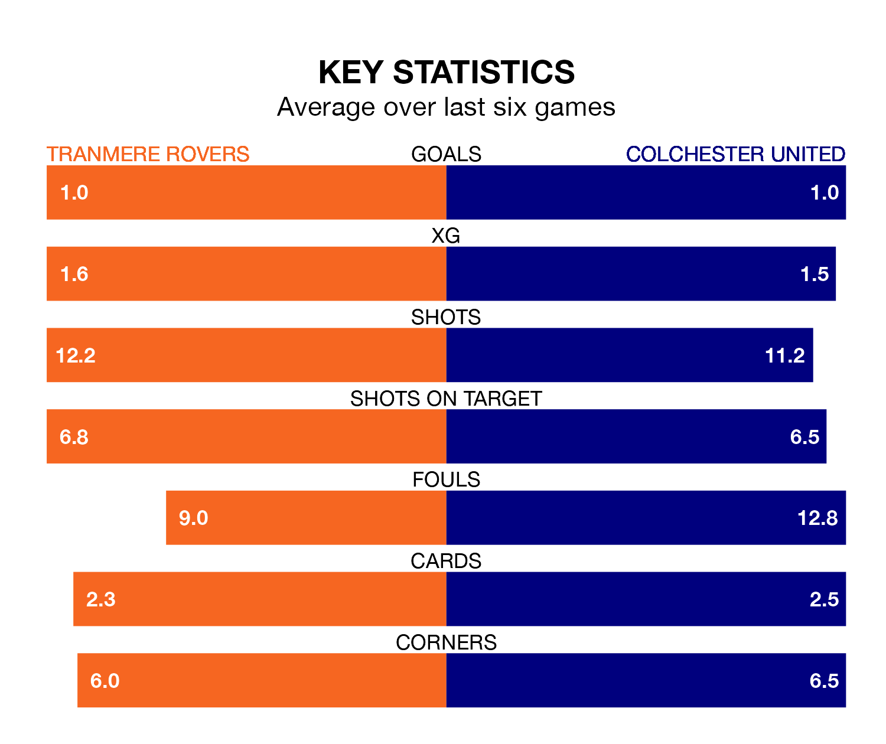

Struggling Colchester United face Tranmere Rovers away at Prenton Park on Monday looking to build on a win in their last league outing.
After securing all three points with a 2-1 victory over Newport County on Friday, the U's sit 22nd in EFL League Two.
They travel to play a Tranmere side 17th in the standings, who lost in their last match, 2-0 against Bradford City.
In the last 10 years, Tranmere and Colchester have played each other on 10 occasions. Tranmere won four of them, Colchester two, and they drew four times.
On average, Tranmere scored 1.2 goals and the U's 0.8 in those matches.
Their last meeting was on September 9, when Colchester won 2-0 at home.
With 49 goals in 38 games so far this season, Colchester are scoring at below the league average rate with 1.3 goals per game. And they are conceding more than average, letting in 67 goals at a rate of 1.8 per game.
Tranmere are also below average scorers, with 1.4 goals per game, compared to a league average of 1.5. They have also conceded 1.4 goals per game.
Rovers are in mixed form in EFL League Two, with three wins and a draw from their last six games.
With a win and four draws over that period, United's form is worse – they have taken seven points from 18, compared to the home team's 10.
Updated: 10:31 (UTC), 31/03/24